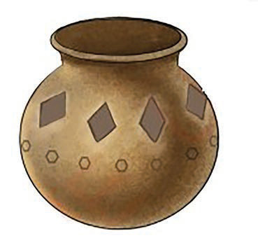
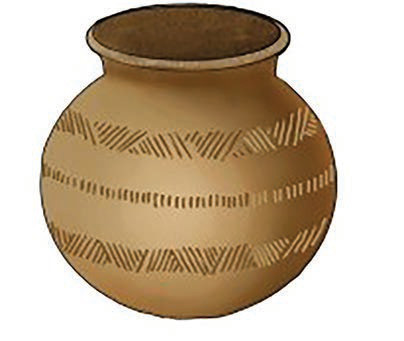

Figure 4: A pot decorated using the incising and carving method

Figure 5: A pot decorated using the scratching method
(b) Painted decorations
To decorate a pot by painting, use a brush or stick to draw lines, flowers, geometric shapes, or any theme that you like.
Use colours that are appropriate for the clay or use other coloured clay as a drawing medium.
The clay in the pot should be slightly damp to make it easier to draw.
Figure 6 shows a pot decorated with coloured patterns.